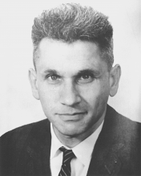

Please note: the AAS Obituaries are temporarily being hosted on this website while their full content is being ingested into the PubPub publishing platform newly adopted by the Bulletin of the American Astronomical Society. When the migration is complete, your existing links will take you to the final, migrated content. Contact peter.williams@aas.org with any questions.
Joseph Weber (1919-2000)
Joe Weber died on 30 September 2000 in Pittsburgh, Pennsylvania, during treatment for lymphoma that had been diagnosed about three years earlier. Joseph (Yonah ben Yakov) Weber was born in Paterson, New Jersey, on 17 May 1919, the last of four children of Lithuanian-Gallitzianer immigrants Jacob and Lena Weber (the original family name of Gerber having been changed to match an available passport). The home language was Yiddish, but a street accident left him unable to talk, and the young Yonah's speech therapist was from Pennsylvania, leaving him with an accent that resulted in the family nickname Yankee. After school, weekend, and summer work, first as a paper carrier, then a golf caddy, and later in a radio store, persuaded him that mind work was more rewarding than muscle work, and he was a frequenter of the Danforth Memorial Library, claiming as an early favorite book Maxwell's Relative and Absolute Motion (though later favorites included Madame Bovary and Lost Horizon).
Joe graduated from the local public schools and Paterson Talmud Torah (where he served as junior cantor until his voice changed at 16). After a year at Cooper Union in New York, he was old enough to take up an appointment at the US Naval Academy in Annapolis (won in a competitive exam) as part of the class of 1940. He stood first in his class in "thermodynamics, differential calculus, and other subjects of very little interest to the Navy," but nearly anchor in what is called "aptitude for the service" (meaning, roughly, social graces). He achieved recognition among his classmates for secretly wiring the mess hall for sound, so that one fine supper time, the sounds of Schubert's Great C Major Symphony suddenly drowned out voices and clanking dishes. As a rope climber on the gymnastics team, he was assigned to the weak squad, but could still make it to the top of a standard Olympic rope in his sixties.
Upon commissioning as an ensign in the summer of 1940, Weber was assigned to the aircraft carrier Lexington under Captain Sherman, who put him to work on navigation, on the basis of his ability to solve spherical triangles. The Lex was the prime target at Pearl Harbor, but luckily had steamed out on the 5th of December 1941. She went down in the Battle of the Coral Sea (8 May 1942) while Lt. Weber was on watch; many shipmates below deck did not survive. Joe used part of the payment from the government for "articles lost in a marine disaster" to buy an engagement ring for his high school sweetheart, Anita Straus (BA in physics, Smith College 1939), whom he married later that year. She died in 1971.
Soon after, he was given command of the submarine chase SC 690, which ferried convoys back and forth across the Atlantic and eventually was in the front wave of the Sicilian landing on 9 July 1943. One of Joe's favorite remarks was that, if they surfaced, the subs could actually go faster than the chasers, "but the submarines didn't know that," a useful guide to many activities.
At the end of the war, Weber was assigned to wind down electronic countermeasures for the Navy, in the process of which he handed out what then seemed like sizable grants to various industrial and research organizations. Several of them offered him positions when he resigned his commission (leaving as Lt. Commander) in 1948, but he accepted instead a professorship at the University of Maryland. This was initially in electrical engineering. In fact, if you consider that Weber was a member of the Passaic County Amateur Radio Club from 1927 to 1936 and of the Institute of Radio Engineers (IRE, later IEEE) from 1944 to his death, he was at least 13/16ths an engineer. A condition of the appointment was that he earn a PhD, somewhere, in something. Physics was his first choice, but when George Gamow responded, in preliminary conversation, that no, he, Gamow, did not know any good problems in microwave spectroscopy, Weber went on to Catholic University of America, receiving a PhD in 1951 for work with Keith Laidler on the inversion spectrum of ammonia. He remained at the University of Maryland, moving to the Physics Department in 1961 and reluctantly accepting emeritus and senior researcher status in 1989. From 1973 onward, following his marriage to astronomer Virginia Trimble in 1972, he spent half of each year at the University of California, Irvine.
The work on measurement of microwave line intensities led to thoughts of amplifiers, and very soon after he first heard about the Einstein A and B coefficients, Weber realized that they provided a way to build a better one. He gave what seems to have been the first public talk (at the IRE meeting in Ottawa, Canada) in the summer of 1952 and published that same year the first open-literature paper on what is now called quantum electronics. His 1958 fellowship citation from IRA IRE reads "for his early recognition of concepts leading to the maser," though others got bigger prizes for slightly later recognition of the concepts.
Some reading in general relativity in the late 1950s (prompted by a child with poor sleep habits) led Weber to consider how one might make contact between that beautiful theory and laboratory measurements. His book, General Relativity and Gravitational Radiation, was published in 1961, soon translated into Chinese, Japanese, and Russian, and remains the thinnest volume on the topic. The first paper on how to build a gravity wave detector dates from 1966 and the first published data from 1969.
His attitude was "build the best detector you know how to build, and operate it until you understand what you are seeing." His first antenna was an aluminum bar, and his postdoc, Robert L. Forward, built and operated the first free-mass interferometer in the early 1970s, soon after returning to Hughes Research Laboratories. The physics community did not endorse either the method or the results, and a large majority vote could easily be assembled for the position that "gravitational radiation exists, and Weber didn't discover it." But when SN 1987A went off, the only operating detectors (of dozens built up to that time) were Weber's and a near copy at the University of Rome (since turned off). Indeed the 36" room temperature bar is filling its last data tape even as this is being written, because, in recent years, Weber had suspected that there might be time coincidences between gamma ray bursts and pulses seen by the bars.
Weber's final scientific thrust was an attempt to improve by a large factor the efficiency of neutrino detectors, using single near-perfect crystals of quartz or silicon in a coherent mode somewhat analogous to Mossbauer scattering of gamma rays. The main goal was to detect nuclear submarines from a distance, and a detector was operating in a test mode near the reactor of the National Institute of Standards and Technology until this year, though another design had also been used as a solar neutrino telescope.
In addition to the AAS, he was a member of the International Astronomical Union, the Astronomical Society of the Pacific, and the Italian Physical Society, and a fellow of the American Physical Society and the Institute of Electrical and Electronic Engineers. He held two Guggenheim Fellowships (1955, 1962), a National Research Council Fellowship (1955), and a Fulbright Scholarship (1963) and was a visitor at the Lorentz Institute of Theoretical physics, Leiden (1955), the University of Colorado (1963), and the Institute for Advanced Study, Princeton (1956, 1962-1962, 1968-1969). Weber received awards from the Washington Academy of Sciences (Scientific Achievement Award, 1958); the Gravity Research Foundation (First Prize in 1959 essay contest; Babson Award, 1970); Sigma Xi (1970); and the New York Academy of Sciences (Boris Pregel Prize 1973). He was elected to the Maryland Engineering Hall of Fame in 1988.
Joe Weber is survived by his three siblings, three sons, six grandchildren, and Virginia Trimble, and was predeceased by his first wife and one son. He was, in the words of the Act of Congress under which graduates of Annapolis receive their commissions, "an officer and a gentleman."
Photo courtesy of Virginia Trimble
Obituary written by: Virginia Trimble (Univ. of Maryland and Univ. of California, Irvine)
BAAS Citation: BAAS, 2000, 32, 1691
SAO/NASA ADS Bibcode: 2000BAAS...32.1691T